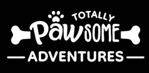

Trade Mark Journal No.2025/021 23 May 2025
UK00004192841 22 April 2025 (16,18,20,21,24,25,28,35)

- Class 16
- Stationery; Pads [stationery]; Pens; Notepads; Holders for notepads; Adhesive notepads; Illustrated notepads; Jotters; Spiral-bound notebooks; Notebooks; Block notepads; Stickers [stationery]; Diaries; Pocket diaries; Desk diaries; Blank journal books; Wirebound books; Pocket books [stationery]; Diaries [printed matter]; Scrapbook pages; Writing books.
- Class 18
- Pet clothing; Raincoats for pet dogs; Pet leads; Electronic pet collars; Collars for pets; Clothing for pets; Pets (Clothing for -); Dog leashes; Pet hair bows; Clothing for domestic pets; Animal leashes; Dog clothing; Dog collars; Dog apparel; Cat collars; Dog shoes; Dog coats; Dog parkas; Dog bellybands; Clothing for dogs; Coats for dogs; Collars for cats; Dog waste bag dispensers adapted for use with leashes; Leashes for animals; Clothing for animals; Bags for sports clothing; Bags; Tote bags; Duffle bags; Toiletry bags; Drawstring bags; Belt bags and hip bags; Carrying bags; Cross-body bags; Crossbody bags; Sling bags; Canvas bags; Shoe bags; Travel bags; Messenger bags; Shoulder bags; Toilet bags; Make-up bags; Hand bags; Canvas shopping bags; Bum bags; Wash bags for carrying toiletries; Duffel bags; Carry-all bags; Grocery tote bags; Carry-on bags; Bucket bags; Luggage bags; Belt bags; Cloth bags; Leather bags; Waterproof bags; Reusable shopping bags; Bags for clothes; Bags for travel; Waist bags; Clothes for animals; Garments for pets; Collars for animals; Collars of animals; Travel luggage; Travel baggage; Travelling bags.
- Class 20
- Pet crates; Pet furniture; Pet houses; Pet cushions; Beds for pets; Beds for household pets; Dog beds; Dog baskets.
- Class 21
- Brushes for grooming pet animals; Pet grooming glove; Pet paw cleaners, non-electric; Pet lick mats; Pet feeding dishes; Pet feeding bowls; Electronic pet feeders; Cages for pets; Pet treat jars; Pet drinking bowls; Cages for household pets; Pets (Cages for household -); Electric pet brushes; Deshedding brushes for pets; Pet feeding and drinking bowls; Deshedding combs for pets; Pet feeding bowls, automatic; De-shedding combs for pets; Brushes for pets; Household containers for storing pet food; Food containers for pet animals; Travel mugs; Mugs; Coffee mugs; Water bottles; Aluminum water bottles; Covers for water bottles; Plastic water bottles [empty]; Bottles; Glass bottles.
- Class 24
- Blankets for household pets; Bed blankets; Sofa blankets; Picnic blankets; Children's blankets; Blanket throws; Comforters (bedding); Duvets; Towels; Covers for duvets; Textile covers for duvets; Cloths; Hooded towels; Bath wrap towels; Bedspreads.
- Class 25
- Clothing; Jackets [clothing]; Ready-to-wear clothing; Clothes; Jerseys [clothing]; Embroidered clothing; Rainproof clothing; Waterproof clothing; Casual clothing; Jackets being sports clothing; Bottoms [clothing]; Ready-made clothing; Clothing for leisure wear; Leisure clothing; Sports clothing; Athletic clothing; Tops [clothing]; Water-resistant clothing; Weatherproof clothing; Collars [clothing]; Clothing for children; Aprons [clothing]; Hoods [clothing]; Clothing for sports; Jogging bottoms [clothing]; Leggings [trousers]; Maternity leggings; Leggings [leg warmers]; Stretch pants; Jogging pants; Trousers shorts; Yoga pants; Gymwear; Athletic tights; Sweatshorts; Pajama bottoms; Tracksuit bottoms; Jogging bottoms; Fleece tops; Waterproof trousers; Lounge pants; Tracksuit tops; Jogging outfits; Jogging tops; Sweat pants; Vest tops; Yoga tops; Shorts [clothing]; Track pants; Fleece pullovers; Hoodies; Sweatshirts; Hooded sweatshirts; T-shirts; Hooded sweat shirts; Short-sleeved T-shirts; Hooded pullovers; Beanies; Tee-shirts; Fleece jackets; Tracksuits; Sweat shirts; Sweaters; Beanie hats; Sweatpants; Jackets; Bandanas; Jumpers [sweaters]; Quilted jackets [clothing]; Sweat jackets; Printed t-shirts; Sport shirts; Hooded tops; Polo shirts; Hooded bathrobes; Casual jackets; Sports jackets; Bandanas [neckerchiefs]; Overcoats; Bandannas; Hats; Wind-resistant jackets; Weatherproof jackets; Padded jackets.
- Class 28
- Pet toys; Dog toys; Toys for dogs; Snuffle mats being dog toys; Toys for pet animals; Toys for pets; Plush toys with attached comfort blanket.
- Class 35
- Retail services connected with the sale of clothing and clothing accessories; Online retail store services in relation to clothing; Retail services in relation to clothing; Retail services in relation to pet products; Mail order retail services for clothing; Online retail store services relating to clothing; Retail services connected with stationery; Online retail services relating to clothing; Retail services in relation to stationery supplies; Mail order retail services for clothing accessories; Online marketing; Online ordering services; Wholesale services in relation to bedding for animals.
Totally Pawsome Limited